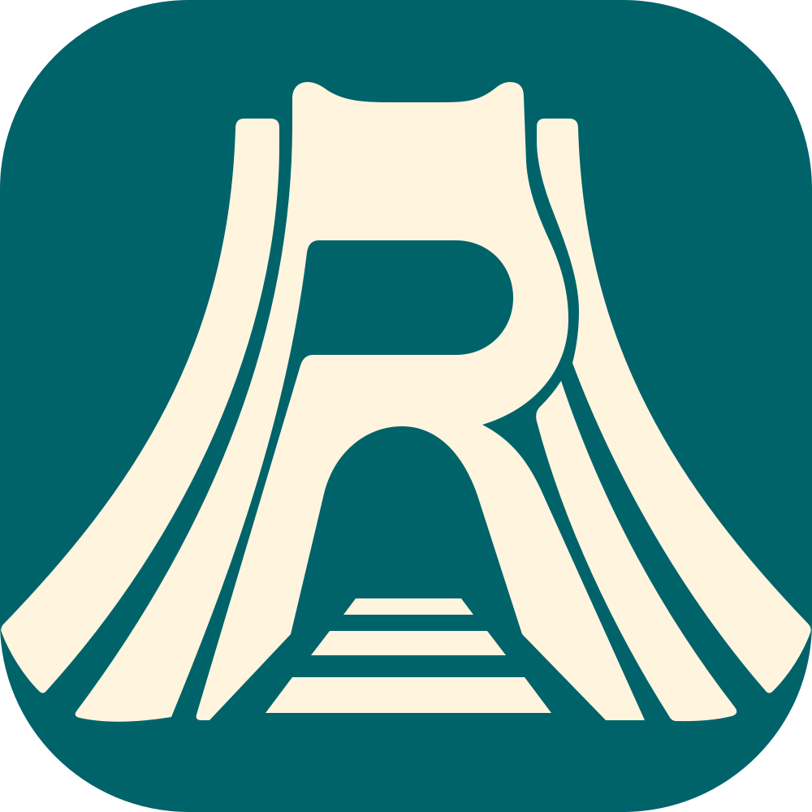

TEHRAN METRO / PRODUCT CONCEPTRail design pack
Review the Persian-first rider experience, compare phone and Windows layouts, or open the implementation handoff.

TEHRAN METRO / PRODUCT CONCEPTReview the Persian-first rider experience, compare phone and Windows layouts, or open the implementation handoff.